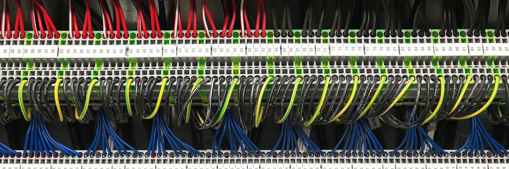
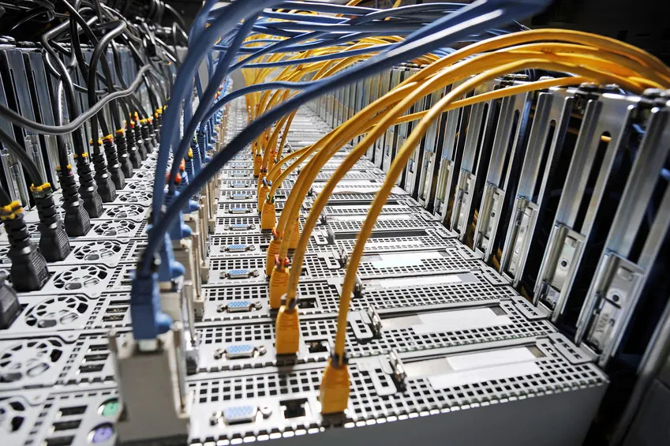
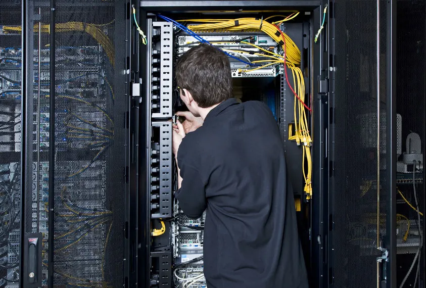
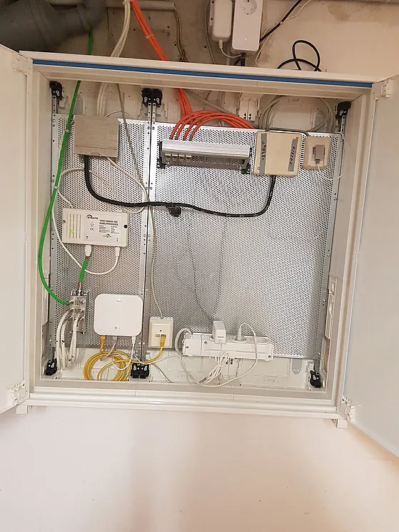

Strukturierte Verkabelung und mehr
Netzwerk- und IT-Infrastruktur
Eine strukturierte Verkabelung ist Ihr einheitlicher Aufbauplan für eine zukunftsorientierte und anwendungsunabhängige Netzwerkinfrastruktur, auf der Sprache und Daten übertragen werden.

Allgemeingültige Strukturen
Eine strukturierte Verkabelung berücksichtigt die Anforderungen mehrerer Jahre, enthält Reserven und kann unabhängig von der Anwendung genutzt werden. So ist es üblich, dieselbe Verkabelung für das lokale Netzwerk und die Telefonie zu nutzen. Damit werden teure Fehlinstallationen vermieden und die Installation neuer Komponenten erleichtert.
Ziele einer strukturierten Verkabelung
- Unterstützung aller heutigen und zukünftigen Kommunikationssysteme
- Kapazitätsreserve hinsichtlich der Grenzfrequenz
- Neutrales Verhalten gegenüber Übertragungsprotokoll und Endgeräten
- Flexible Erweiterbarkeit
- Ausfallsicherheit durch sternförmige Verkabelung
- Datenschutz und Datensicherheit müssen realisierbar sein
- Einhaltung existierender Standards
- Standardisierte Mess-, Prüf- und Dokumentationsverfahren
Aus unserer Arbeit
Beispiele



Kontakt
Sprechen wir darüber.
Ob eine defekte Steckdose, ein überfälliger Prüftermin oder eine Halle, die neu verkabelt werden muss — schildern Sie uns kurz Ihr Anliegen. Wir sagen Ihnen offen, ob wir der richtige Betrieb dafür sind.